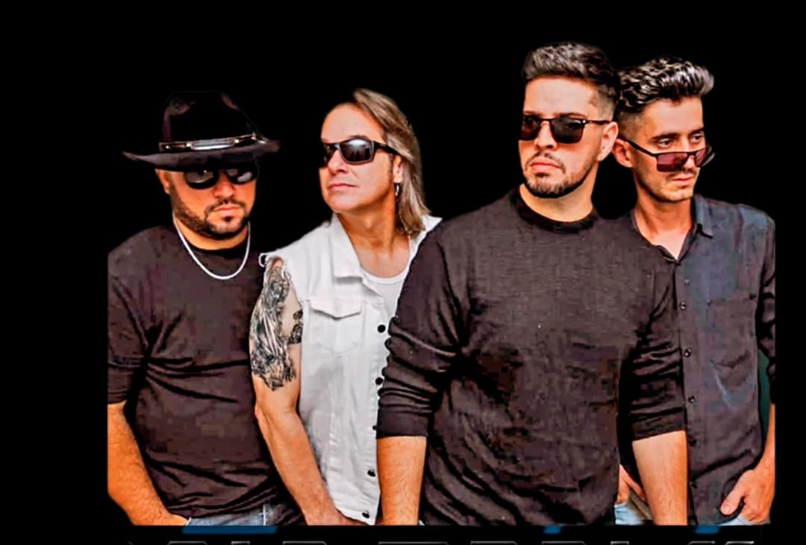
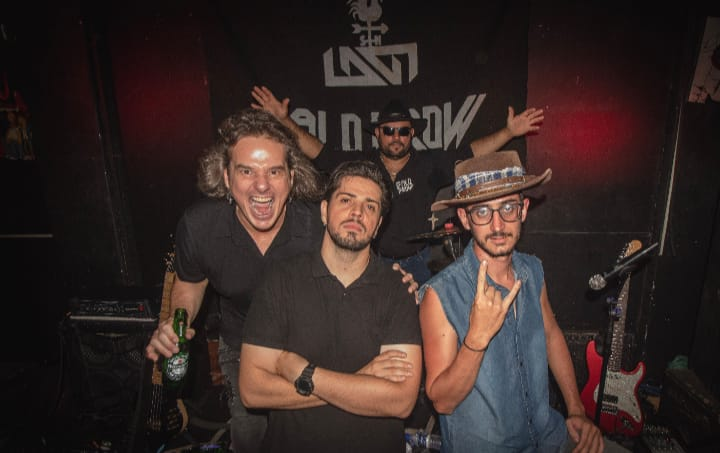
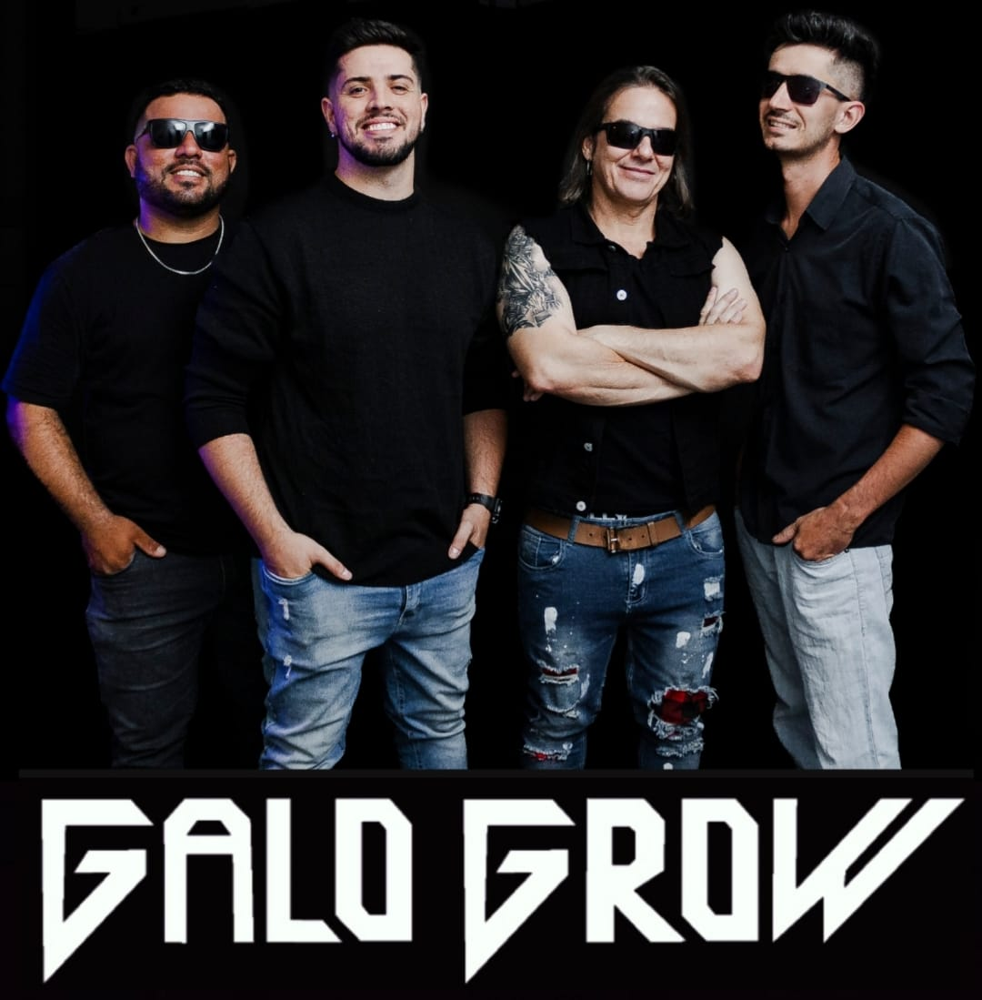

A Gente Toca de Tudo
Nascida em 2017, a Galo Grow surgiu da energia de uma confraternização entre amigos e transformou essa sinergia em um projeto musical de alto nível. Com uma trajetória marcada pela autenticidade, a banda entrega um repertório extremamente abrangente que transita com maestria pelo Pop, clássicos internacionais, o peso do Heavy Metal, o melhor do Rock Nacional e os hits que dominam as paradas atuais. O grande diferencial da Galo Grow é a sua identidade: não importa o gênero, cada música recebe uma roupagem única com a pegada e a atitude do Rock 'n' Roll. É a trilha sonora perfeita para quem busca versatilidade sem abrir mão da energia e do peso que só o rock proporciona.
Próximos Shows
📅 14 Fev as 19:00 hs — Artur Nogueira/SP — Quintal do Lago
📅 15 FEV Evento Fechado
Mídia



Nosso canal youtube
Press Kit (EPK)
Material completo para contratantes e imprensa.
Baixar EPK (PDF)